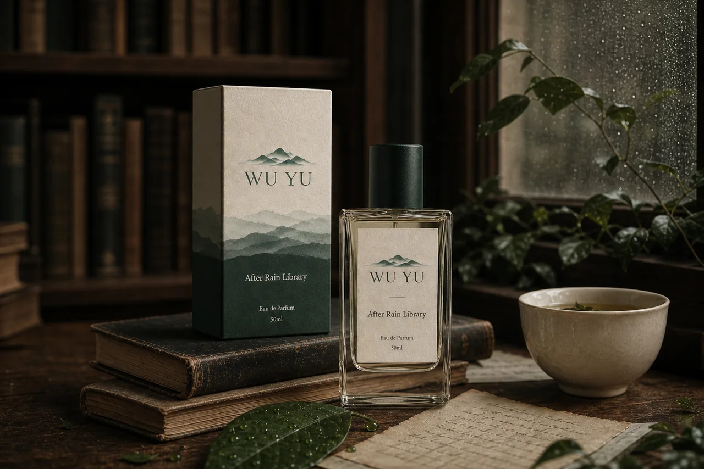
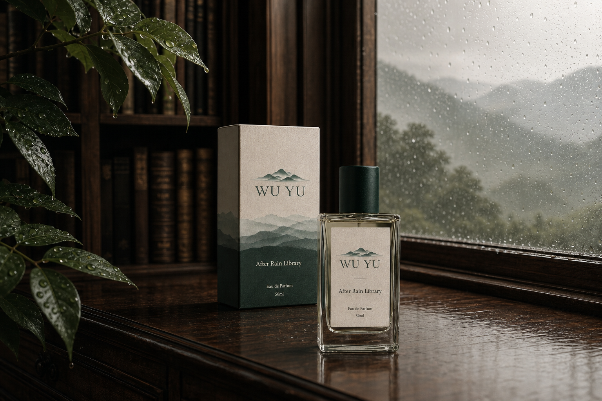
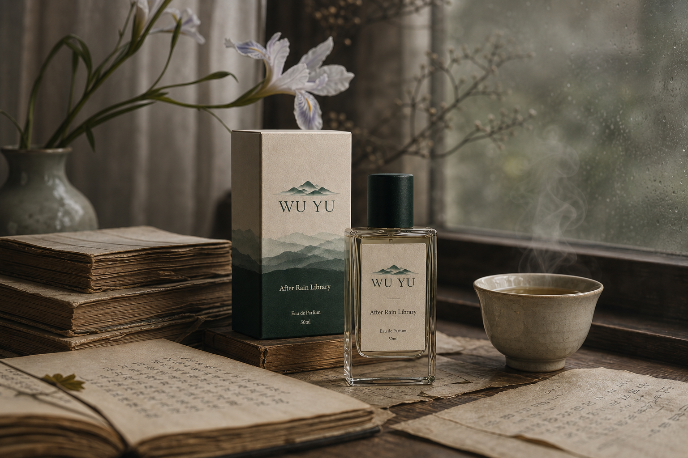
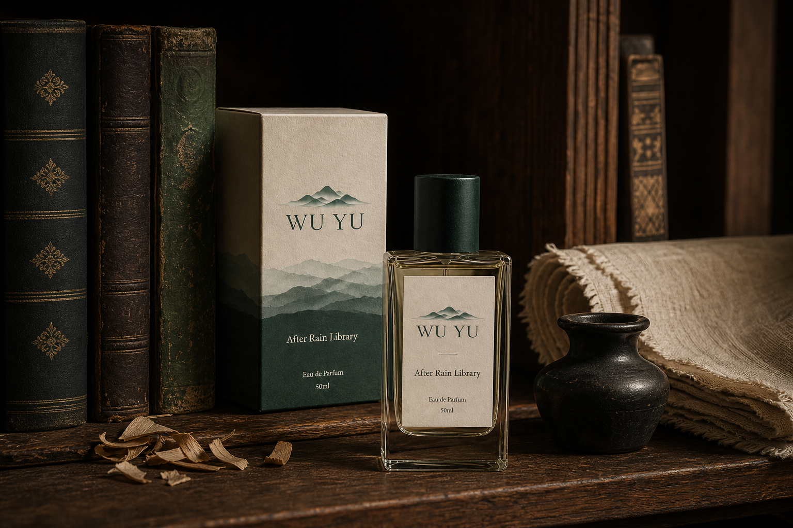
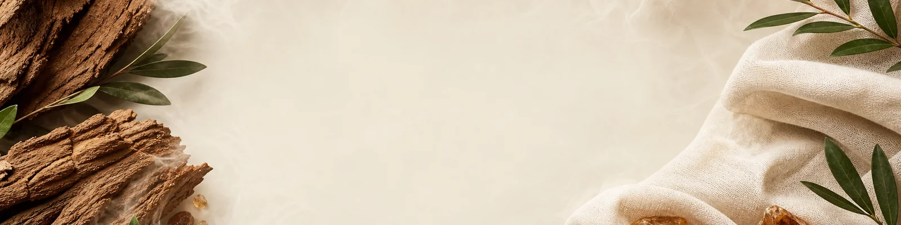
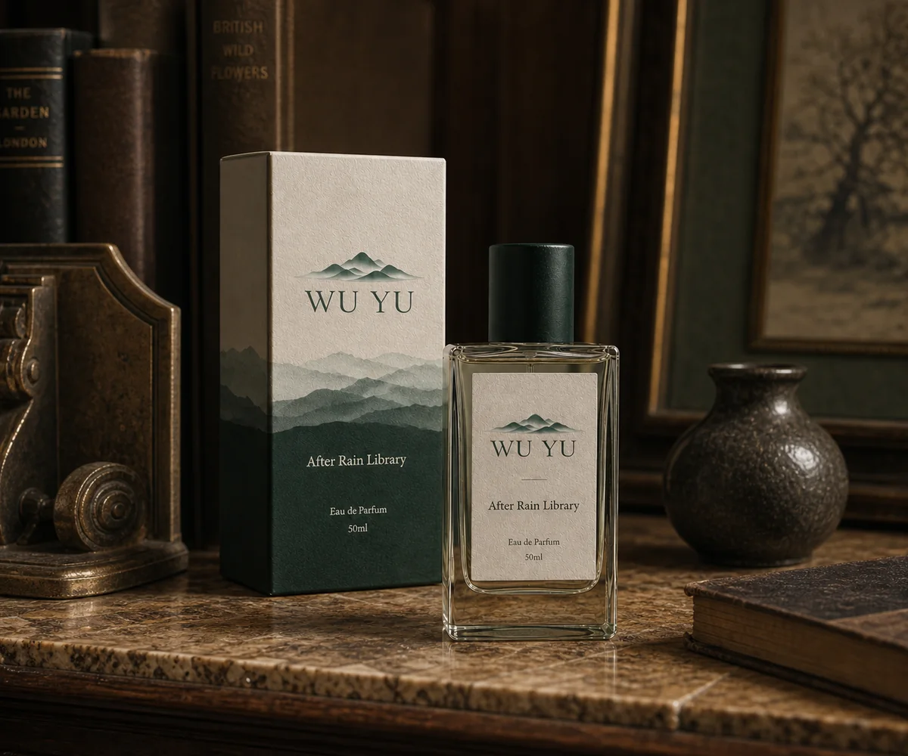
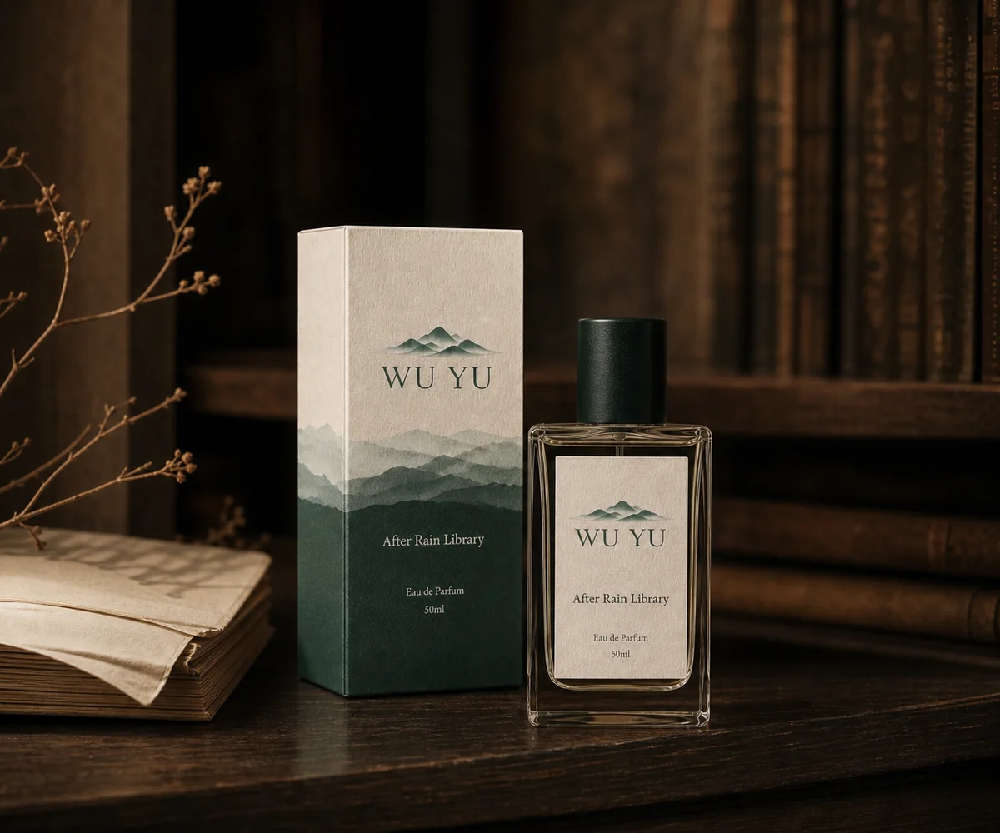

雨后
窗外树叶带着水汽，先给出微苦而清新的明亮入口。

雨后图书馆
探索这支香香气故事
它不喧哗，也不刻意取悦。像雨雾散去后，木门后的一段安静时光。

雨后
窗外树叶带着水汽，先给出微苦而清新的明亮入口。
旧纸张
泛黄的页边与白茶热气，留下干净、不沉闷的温度。


木质书架
温暖却不甜腻的余韵，缓缓贴近肌肤，保留安静的分寸。
香调结构
前调 · 初见 0–15 分钟
清透、微苦、湿润，像雨水刚冲洗过叶片。
中调 · 相处 15–90 分钟
柔和纸感与一点粉感，是这支香最具辨识度的段落。

后调后调 · 贴近肌肤
温暖、干净、贴肤，让木质感在低处轻轻停留。
产品细节

试香方式
先喷在试香纸上，等待约 30 秒后闻第一印象；避免连续快速闻多支香水。
在手腕或手臂内侧喷 1–2 下，等它走过前调、中调与后调。
至少观察 2–4 小时；对粉感、麝香或木质香敏感时，建议先试香。
购买

WU YU · 雾屿
After Rain Library
配送与客服信息均为演示内容。